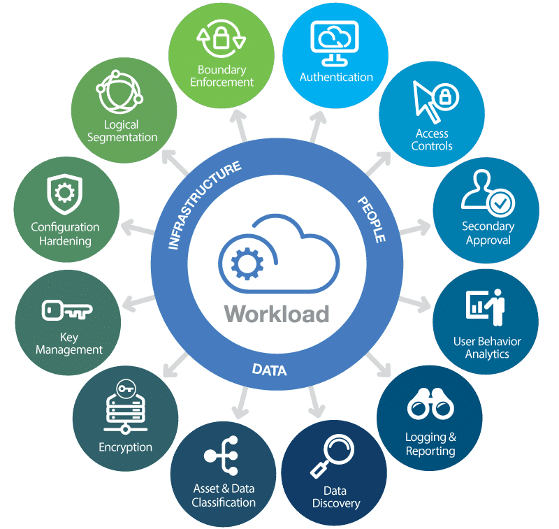

Servicios en la Nube: Tu centro de datos virtual
¿Qué es la computación en la nube?
La computación en la nube es un modelo que permite acceder a recursos informáticos como servidores, almacenamiento, bases de datos, redes, software, análisis y más a través de Internet.
Tipos de servicios en la nube
- IaaS (Infraestructura como Servicio): Alquila recursos informáticos básicos como servidores virtuales y almacenamiento.
- PaaS (Plataforma como Servicio): Entorno para desarrollar y desplegar aplicaciones sin gestionar la infraestructura.
- SaaS (Software como Servicio): Aplicaciones de software accesibles a través de Internet.
Principales proveedores de servicios en la nube
| Proveedor | Características destacadas |
|---|---|
| Amazon Web Services (AWS) | Amplia gama de servicios, alta escalabilidad, ecosistema robusto |
| Microsoft Azure | Integración con herramientas de Microsoft, enfoque en híbrido y multi-nube |
| Google Cloud Platform (GCP) | Inteligencia artificial avanzada, análisis de datos a gran escala |
Casos de uso comunes
- Almacenamiento de datos: Copias de seguridad, archivos, big data
- Desarrollo de aplicaciones: Desarrollo web, móvil y de software empresarial
- Análisis de datos: Business intelligence, machine learning
- Despliegue de sitios web: Hosting de sitios web y aplicaciones web
Beneficios de la computación en la nube 
- Escalabilidad: Ajusta los recursos según las necesidades.
- Flexibilidad: Accede a los recursos desde cualquier lugar.
- Costo-efectividad: Paga solo por lo que usas.
- Seguridad: Proveedores con medidas de seguridad robustas.
- Velocidad de implementación: Rápida puesta en marcha de aplicaciones.